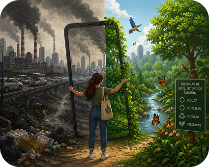

Meus Cursos > Português
Interpretação de Textos Não-Verbais
▶
Leitura
▶
Exercícios
Questão 1 de 3
Sucesso 0/3

Analisando os elementos puramente visuais e estruturais da ilustração ao lado, qual é a principal crítica social ou reflexão apresentada pelo autor?
(A)
O avanço tecnológico sustentável é a única saída harmônica para proteger as florestas.
(B)
A contradição irônica entre a aparente evolução humana moderna e a degradação ambiental.
(C)
A total ausência de interferência humana na sobrevivência e beleza das matas preservadas.
Confirmar Resposta